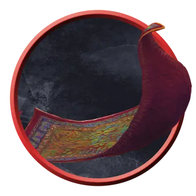

Живой ковёр удушения
Animated Rug of Smothering
Большой Конструкт, без мировоззрения

Класс Защиты 12 Инициатива +4 (14)
Хиты 27 (5к10)
Скорость 10 футов
| мод | спас | ||
|---|---|---|---|
| СИЛ | 17 | +3 | +3 |
| ЛОВ | 14 | +2 | +2 |
| ТЕЛ | 10 | +0 | +0 |
| мод | спас | ||
|---|---|---|---|
| ИНТ | 1 | −5 | −5 |
| МДР | 3 | −4 | −4 |
| ХАР | 1 | −5 | −5 |
Иммунитеты Психический, Яд; Испуганный, Истощение, Оглохший, Окаменевший, Отравленный, Очарованный, Парализованный
Чувства пассивное Восприятие 6, Слепое зрение 60 футов
Языки нет
Опасность 2 (450 опыта; БВ +2)
Действия
Удушение. Бросок рукопашной атаки: +5, досягаемость 5 фт. Попадание: 10 (2к6 + 3) Дробящего урона. Если цель — существо Среднего размера или меньше, ковёр может вместо нанесения урона Схватить цель (Сл высвобождения от захвата 13). Пока захват длится, цель Опутана, Ослеплена, задыхается и получает 10 (2к6 + 3) Дробящего урона в начале каждого своего хода. Ковёр одновременно может душить только одно существо.
Пока ковёр держит цель в захвате, он не может совершать это действие и получает только половину нанесённого ему урона (округляя вниз), и захваченная цель получает такой же урон.
Бонус мастерства +2
Среда обитания Город
Сокровища Отсутствуют
Оживлённые объекты
Ожившие предметы быта
Магия может управлять обыденными вещами, заставляя их выполнять несложные задачи. Такими оживлёнными предметами могут стать невзрачные инструменты или украшения, способные защитить своего создателя. Они следуют простым указаниям создавшего их мага или силы. Если оставить их без присмотра, они будут охранять вверенную им область или выполнять порученную задачу, пока не рассыплются в пыль.
Совершите бросок по таблице «Оживление объекта» или выберите сами, что за магия управляет этим объектом.
Оживление объекта
| 1к10 | Объект был оживлён... |
| 1 | Небожителем или Исчадием для защиты или истязания смертного. |
| 2 | С помощью сочетания магии и технологий, таких как алхимия или чужеродная наука. |
| 3 | Сущностью кого-то преображённого сверхъестественным шутником. |
| 4 | Феей — как игра или подлость. |
| 5 | По случайности после ста лет использования. |
| 6 | Заклинателем, который нуждается в защитнике или слуге. |
| 7 | Мелодией, сыгранной на магическом музыкальном инструменте. |
| 8 | Вселившимся в него духом. |
| 9 | Дикой магией, неудачным заклинанием или хаотичным Артефактом. |
| 10 | Волей могущественной парапсихической сущности. |
Живой ковёр удушения может напасть на существо, наступившее на него. Иногда такие ковры маскируются под похожие магические предметы, такие как Ковёр-самолёт, и бросаются на тех, кто произносит предполагаемое командное слово. Смертоносные гобелены, меха и подобные предметы также используют этот блок характеристик.